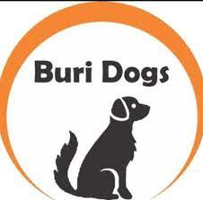
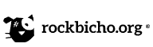

Cão Viver

Associação Cãoviver em Defesa dos Animais
Rua Primeiro de Maio, 165

Buri Dogs
É uma iniciativa de moradores do bairro Buritis, na zona oeste da capital mineira. O objetivo é salvar a vida de cães e gatos e encontrar um lar – seja fixo, seja temporário – para os animais abandonados.

Rock Bicho
Somos a Rockbicho.org Associação de Proteção Animal uma organização não governamental, sem fins lucrativos, que atua com o objetivo de promover a defesa dos animais